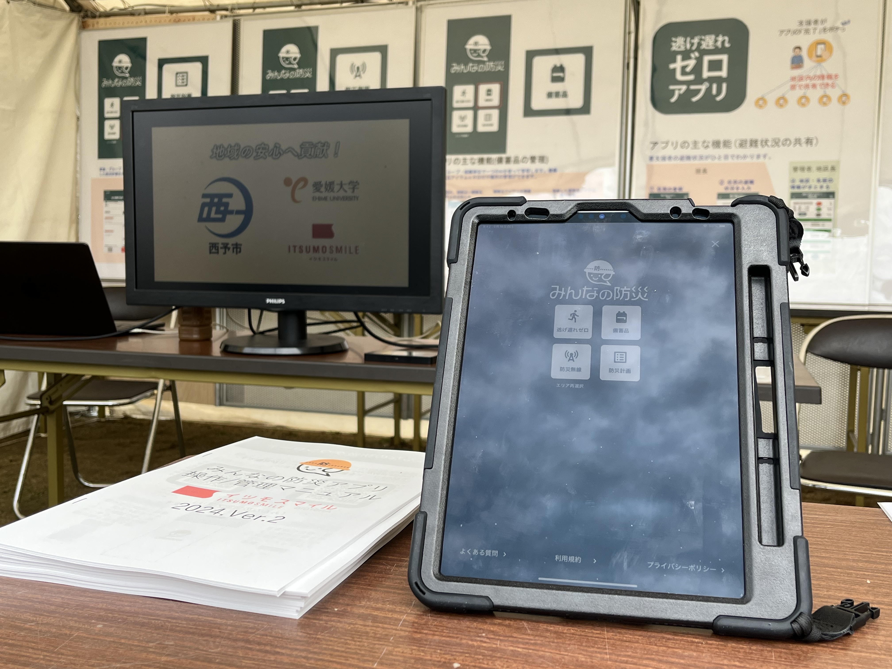
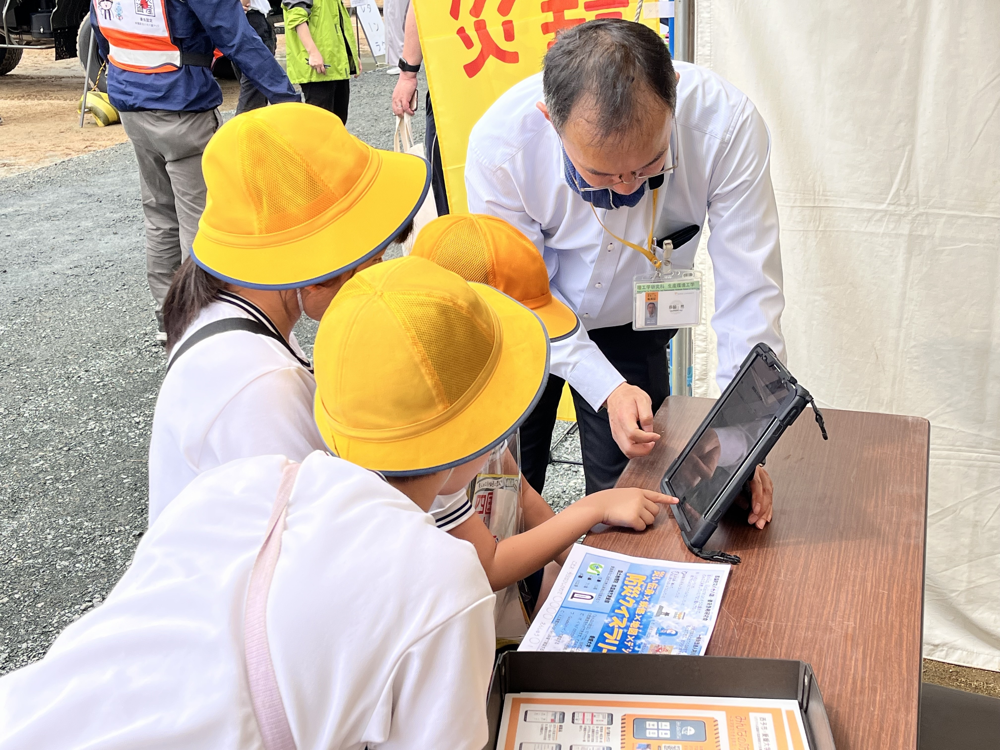

mizukan
肱川総合水防演習
2025年5月18日(日)、大洲市若宮の肱川河川敷で開催された肱川総合水防演習に参加しました！
国土交通省四国地方整備局の皆さんをはじめ、自衛隊や消防団、いつもお世話になっている
西予市の職員の方々など多くの機関が参加するイベントでした。

わが研究室は体験・展示コーナーにおいて、AMDアワードを受賞した
「みんなの防災アプリ」を来場者の方たちに体験していただきました。

また、防災クイズラリーも大好評でした！
四国地方整備局で働く当研究室の先輩も活躍していました！
今後もこのような防災イベントに参加していきたいと思います！
文責 前田